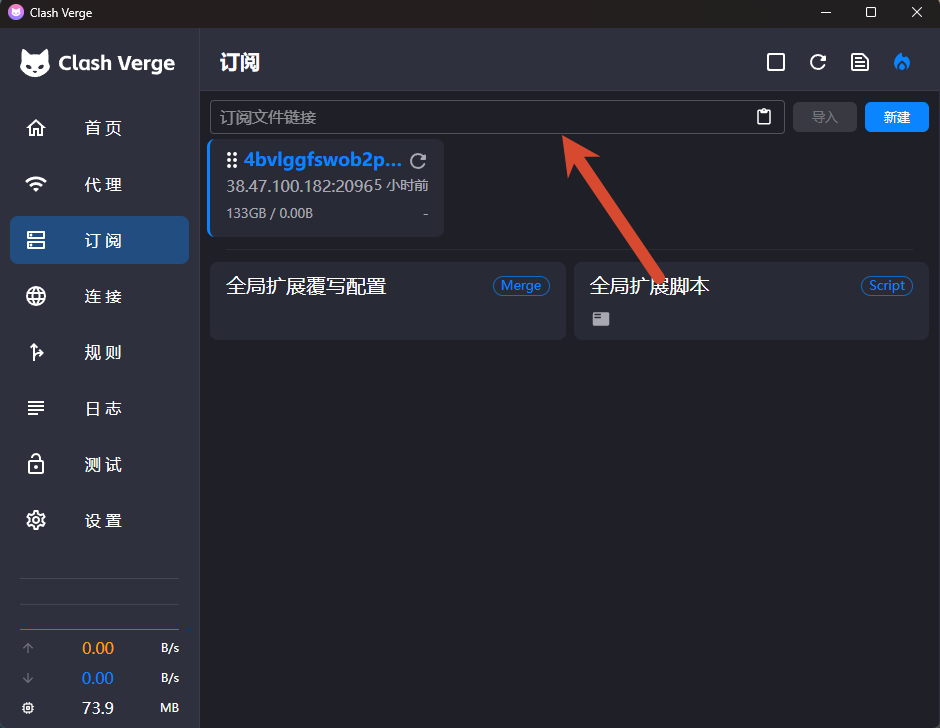
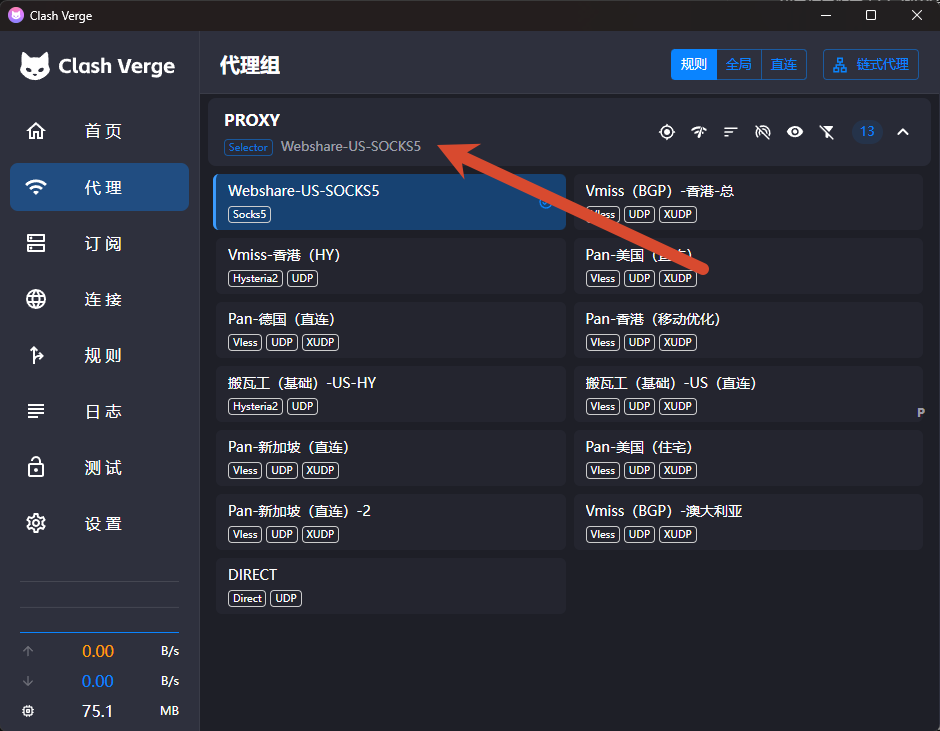
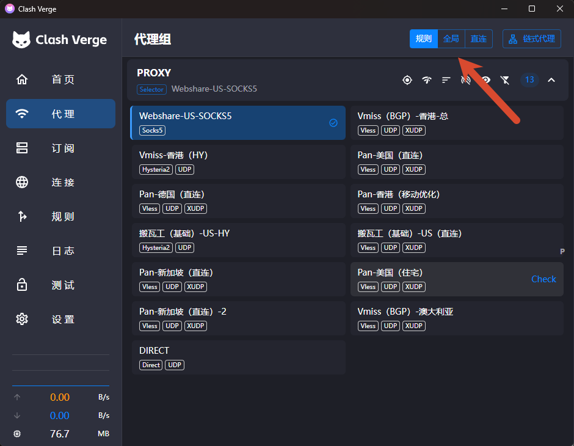
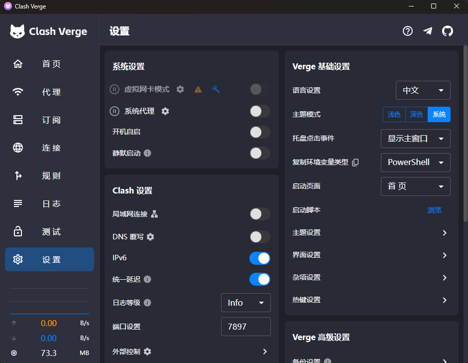
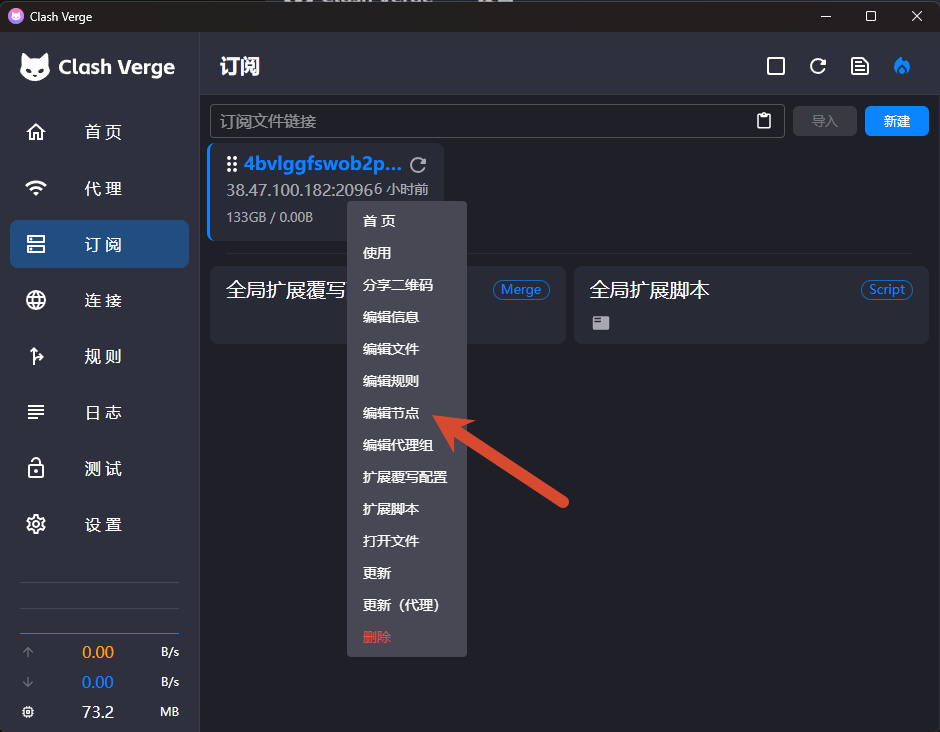
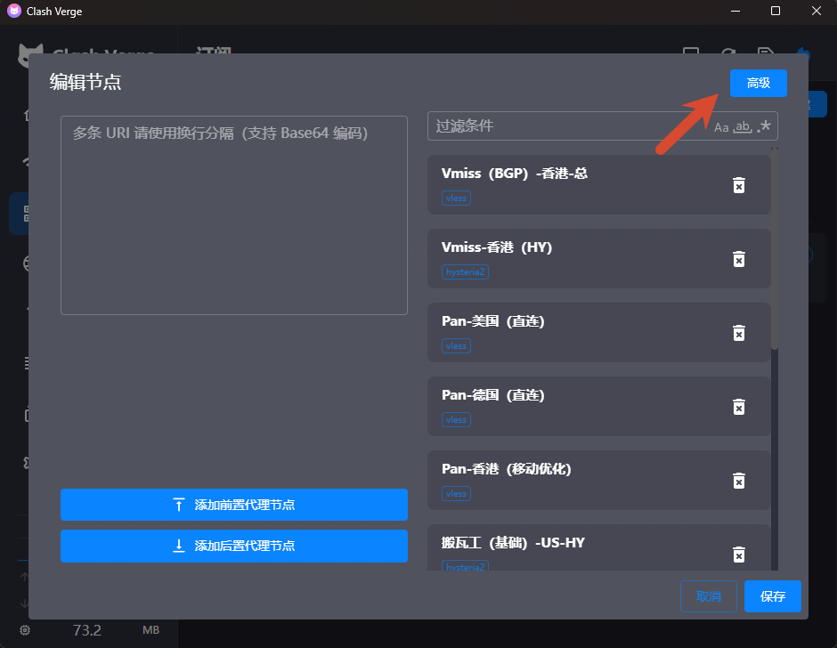
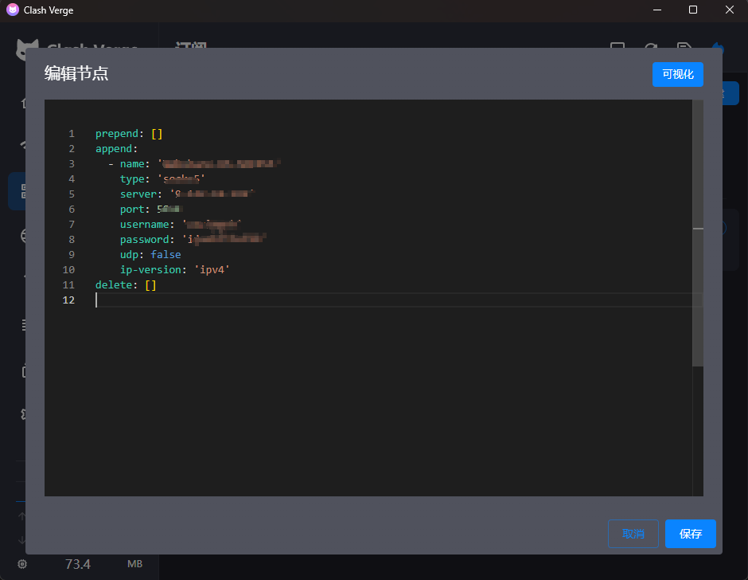

🎁 [主标题]

本期要点： [本期从订阅链接导入和节点选择开始，讲解规则、全局、直连模式以及系统代理与 TUN 的区别，并演示链式代理的配置方法和常见连接问题排查，适合从 Clash for Windows 迁移到 Clash Verge Rev 的新手参考。]。
⬇️ Clash Verge Rev 官方下载
⬇️ v2rayN 与 Shadowrocket 官方下载
- v2rayN：GitHub Releases 下载最新版
- Shadowrocket：Apple App Store 官方下载
🔗 本期相关服务推荐
🚀 视频同款良心云机场
博主折腾互联网和各类网络工具多年，这款是在我实际体验过的同类机场中，目前价格最低的一档，同时节点速度表现也相当不错，适合预算有限、流量需求较大的用户。 邀请码：zwTTkkF7
🖥️ 搬瓦工 VPS 推荐
如果你更倾向于自己搭建节点，希望拥有独立服务器和更高的配置自由度，也可以选择搬瓦工 VPS。
📖 静态住宅 IP
- 👉 本期视频同款静态 IP（Webshare）：点击跳转
一、导入订阅链接
首先从服务商后台复制 Clash 或 Mihomo 格式的订阅链接。
打开 Clash Verge Rev，点击首页的“导入订阅”：
- 粘贴订阅链接；
- 等待客户端获取配置；
- 进入左侧“订阅”页面；
- 找到刚刚导入的订阅；
- 点击更新；
- 点击“使用”或“激活”。
成功以后，进入“代理”页面应该能看到不同地区的节点。

二、选择并使用节点
进入左侧“代理”页面：
- 选择需要使用的代理组；
- 点击延迟测试；
- 选择一个延迟正常的节点；
- 回到首页；
- 将代理模式设置为“规则”；
- 开启“系统代理”；
- 打开浏览器测试网站；
- 查询当前出口 IP 是否发生变化。

推荐日常使用：
规则、全局与直连模式的区别
| 模式 | 流量处理方式 | 适用场景 | 优点 | 缺点 |
|---|---|---|---|---|
| 规则 | 根据域名、IP、地理位置等预设规则自动分流；需要代理的流量走节点，其余流量直接连接。 | 日常使用，例如境外网站走代理、国内网站直连。 | 自动分流，兼顾访问速度和代理需求，适合长期使用。 | 依赖规则集的准确性；规则过期或匹配错误时，部分网站可能无法正常访问。 |
| 全局 | 原则上所有被 Clash 接管的网络流量都通过当前选择的代理节点转发。 | 测试节点、排查规则问题，或者临时让大部分流量强制经过代理。 | 配置简单，可以快速确认代理节点是否正常工作。 | 访问国内网站可能变慢；流量消耗更大；部分本地服务可能受到影响。 |
| 直连 | 被 Clash 接管的流量不经过代理节点，直接连接目标服务器。 | 访问国内服务、局域网设备，或者临时停止使用代理。 | 访问本地及国内服务速度快，不消耗代理流量。 | 无法通过代理访问受限制的境外资源，也不会隐藏真实出口 IP。 |
日常使用建议选择“规则模式”；测试节点或排查分流问题时选择“全局模式”；暂时不需要代理时选择“直连模式”，或者直接关闭系统代理与虚拟网卡模式。

三、系统代理与 TUN 模式
系统代理
适合浏览器和大部分支持系统代理的软件，配置简单，建议新手优先使用。
TUN 模式 (虚拟网卡模式)
适合不读取系统代理的应用、游戏和部分命令行程序。
如果普通系统代理已经够用，就没有必要开启 TUN。开启 TUN 后出现断网时，应先关闭其他 VPN、v2rayN 和代理软件，避免虚拟网卡或路由冲突。

四、链式代理：机场节点 + 住宅 IP
链式代理可以让流量先经过机场节点，再通过住宅 IP 访问目标网站：
1. 添加 SOCKS5 住宅节点
进入 Clash Verge Rev 的“订阅”页面，找到正在使用的订阅配置，选择“编辑节点”，然后切换到“高级”模式。


按照下面的 YAML 格式填写：
append:
- name: "住宅IP出口"
type: socks5
server: "proxy.example.com"
port: 12345
username: "你的用户名"
password: "你的密码"
udp: false
ip-version: "ipv4"
需要替换的内容：
server：住宅代理的服务器地址或 IP；port：住宅代理端口；username：代理用户名；password：代理密码；udp：代理商明确支持 UDP 时，可以改为true。

如果 SOCKS5 代理不需要账号密码，可以删除下面两行：
填写完成后点击“保存”，住宅代理便会作为一个独立节点出现在代理列表中。
2. 组成代理链
进入“代理”页面，点击右上角的“链式代理”：
- 将机场或自建节点添加到最上方，作为入口节点；
- 将 SOCKS5 住宅节点放在下方，作为出口节点；
- 确认节点顺序无误后连接代理链；
- 打开 IP 查询网站，检查当前出口是否已经变成住宅 IP。
正确顺序如下：
链式代理中，最上方是入口节点，最下方是最终出口节点。任何一个节点失效，整条代理链都可能无法连接。
🧰 常见问题与解决方法
1. 订阅链接导入失败
检查以下内容：
- 订阅是否过期；
- 套餐流量是否耗尽；
- 链接是否复制完整；
- 链接前后是否存在空格；
- 服务商是否提供 Clash/Mihomo 格式；
- 当前网络能否访问订阅服务器；
- 系统日期和时间是否正确。
如果已有其他可用节点，可以尝试“通过代理更新订阅”。
2. 导入成功，但没有节点
可能原因：
- 订阅返回的是登录页面，而不是节点配置；
- 订阅格式不兼容；
- 节点被过滤条件隐藏；
- 订阅没有成功激活；
- 服务商限制了客户端类型。
可以尝试重新更新、重新激活订阅，或者联系服务商获取 Clash/Mihomo 专用订阅。
3. 所有节点都显示 Timeout
依次检查：
- 本地网络是否正常；
- 更换其他节点；
- 重启 Mihomo 内核；
- 检查防火墙和安全软件；
- 查看日志中的具体错误；
- 使用浏览器实际测试节点。
节点显示 Timeout 不一定代表完全不可用，有时只是默认测速地址无法访问。
4. 选择节点后仍然无法访问
检查：
- 是否开启了系统代理或 TUN；
- 是否选择了正确的代理组；
- 当前是否误选“直连”模式；
- 浏览器是否使用了独立代理扩展；
- 其他代理客户端是否正在修改系统代理；
- 当前规则是否将目标网站设置为直连。
可以暂时切换到“全局”模式测试。如果全局模式正常，通常说明问题出在分流规则。
5. Clash 关闭后无法联网
这通常是 Windows 系统代理没有正确恢复。
打开：
关闭“使用代理服务器”，然后重新打开浏览器。
6. Clash Verge Rev 与 v2rayN 冲突
两个客户端可以同时安装，但不要同时接管系统流量。
建议确保：
- 只开启其中一个客户端的系统代理；
- 只开启其中一个客户端的 TUN；
- 两个客户端使用不同的本地端口；
- 不同时开启双方的系统代理守卫。
如果平时使用 v2rayN，只在 Clash 中编辑节点，应保持 Clash 的系统代理和 TUN 关闭。
7. 开启 TUN 后断网
可以依次尝试：
- 关闭其他 VPN 和代理客户端；
- 关闭 DNS 覆写；
- 恢复默认 TUN 设置；
- 重启 Mihomo 内核；
- 重新安装服务模式；
- 暂时改回系统代理。
总结
Clash Verge Rev 的基础使用流程可以概括为：
普通用户优先使用“规则模式 + 系统代理”。只有普通系统代理无法接管目标应用时，再考虑开启 TUN。
⚠️ 免责声明
- 本文内容仅供技术交流，请遵守当地法律法规。